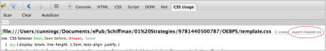

Mediante las herramientas para desarrolladores del navegador web Google Chrome
1. En las herramientas para desarrolladores de Chrome, visite la sección de Auditoría.
2. Ejecute la opción Desempeño de la Página Web. A continuación, puede obtener una lista de las reglas CSS no utilizadas por la página en la que se encuentra.
Mediante complementos del navegador web Firefox
1. En Firefox primeramente debes instalar los complementos Firebug y Uso de CSS (CSS Usage).
2. Haga clic en el ícono de Firebug en la esquina superior derecha de la ventana del navegador.
3. En el panel que aparece en la parte inferior de la ventana del navegador, haga clic en el "Modo de empleo CSS" (CSS Usage) y luego haga clic en "Scan".
4. Las reglas CSS usadas se señalan en verde y las no usadas en rojo.
Otra forma de saber las reglas CSS no usadas sería dando clic en exportar el CSS limpio (export cleaned css).

Las reglas que tienen delante el término UNUSED serían las que no están siendo utilizadas.